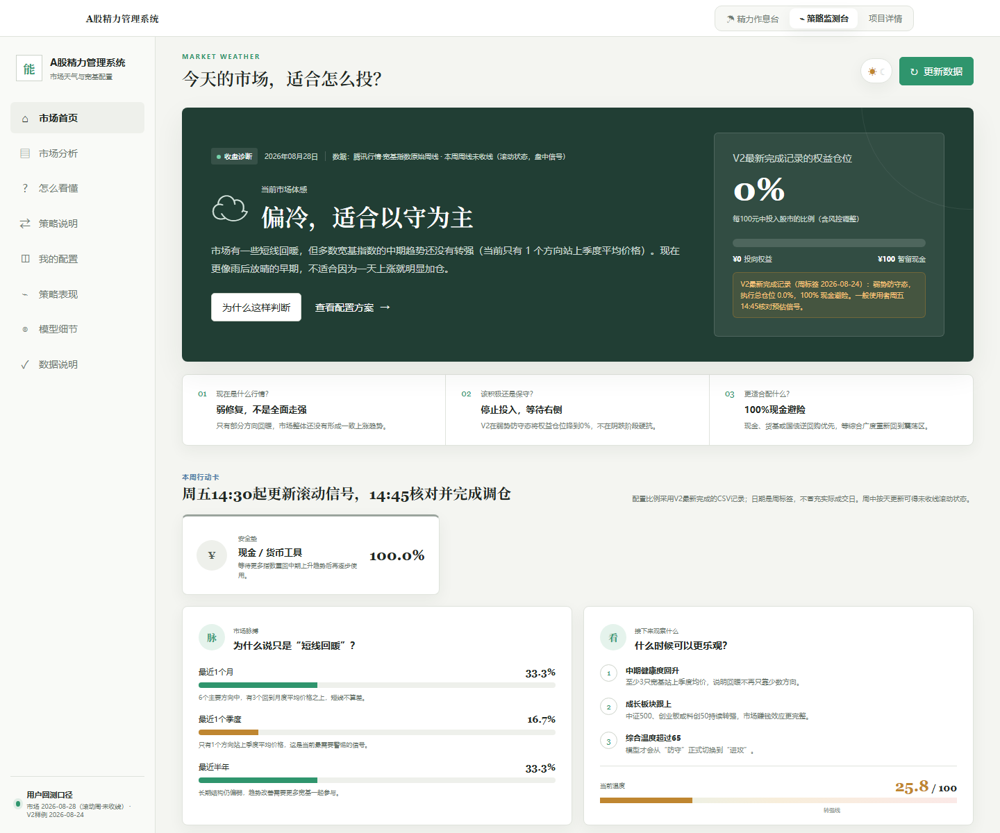
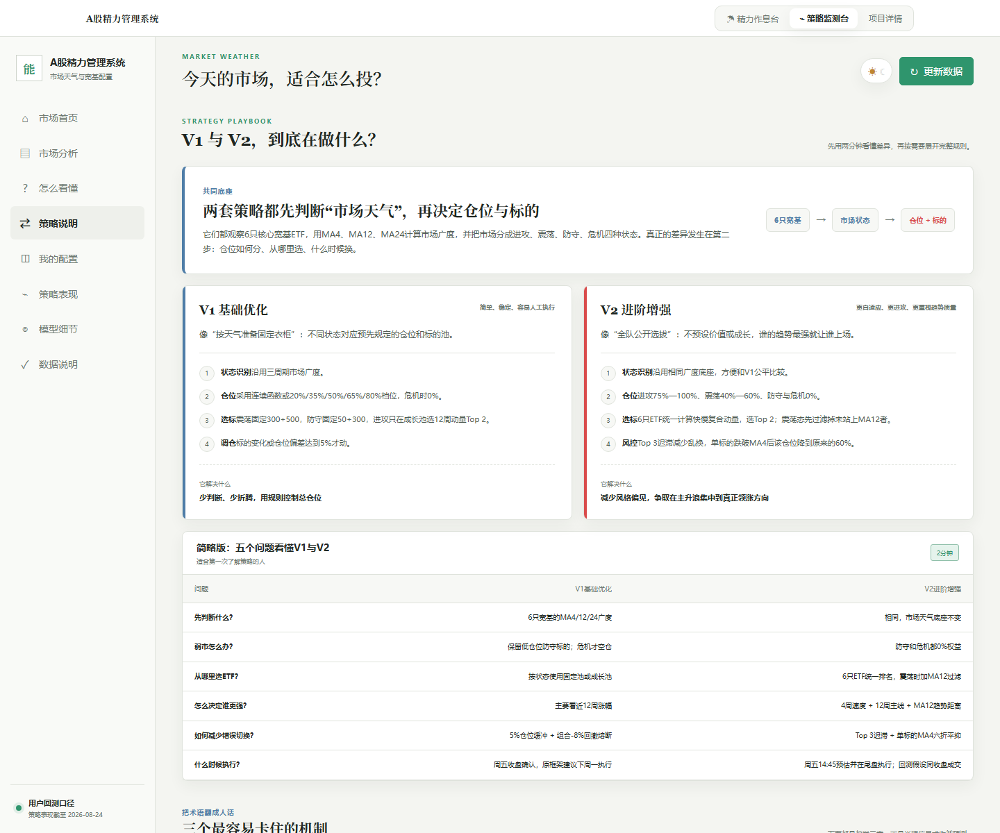
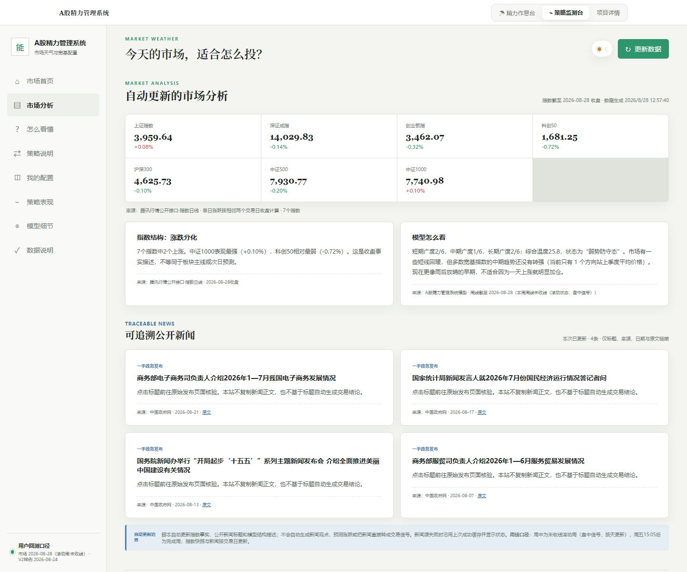
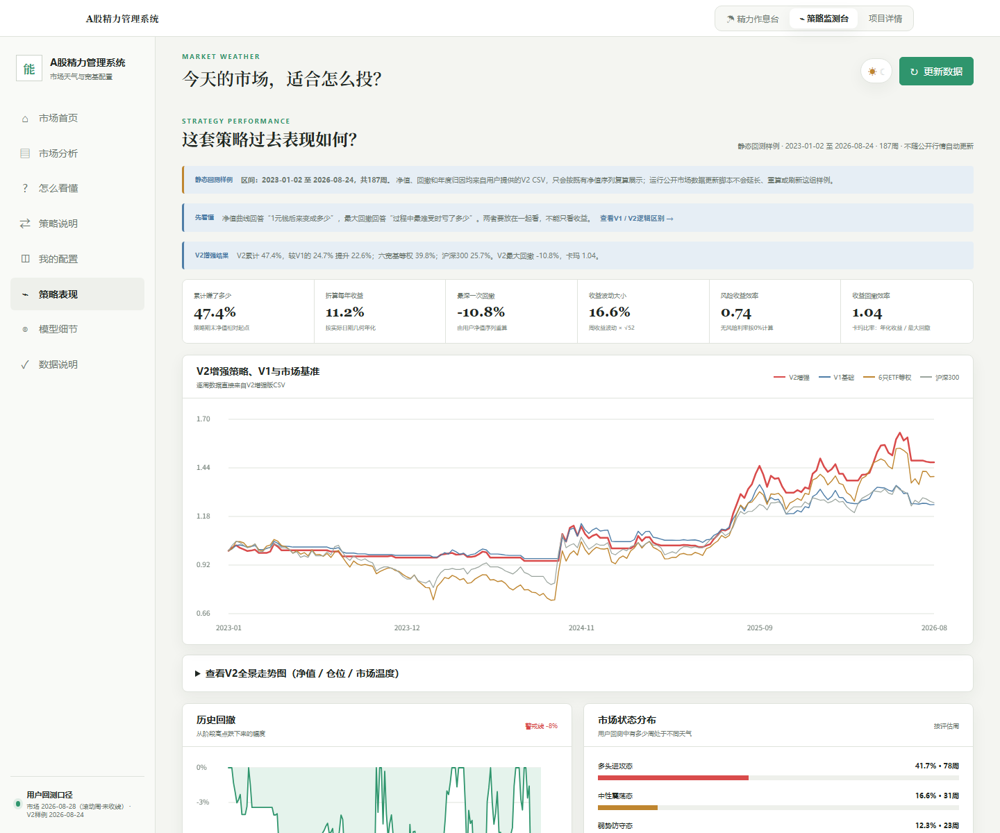

六只宽基分别观察 MA4、MA12、MA24，以市场广度而非单一指数点位识别风险环境。
OPEN-SOURCE A-SHARE REGIME TOOLKIT
先判断市场天气，再决定投入多少资金与精力
一个无框架、无后端、可离线运行的 A 股宽基状态识别原型。它把六宽基趋势广度、V1/V2 ETF 配置规则、回测审计和投资作息管理放进同一套界面。
纯 HTML / CSS / JS零运行时依赖浅色 / 深色桌面 / 移动端

WHY IT EXISTS
多数投资工具只告诉你“看什么”，很少告诉你“什么时候别看”
先由市场状态决定总权益仓位，再做 ETF 选择，避免“看好某个方向”绕过组合风控。
把多头、震荡、防守、危机映射为不同的研究时间和盯盘频率，降低低胜率阶段的内耗。
TWO WORKSPACES
普通投资者入口与可审计策略台分层



DECISION CHAIN
从六宽基到仓位建议，只走五步
- 01观察六宽基
上证50、沪深300、中证500、中证1000、创业板指、科创50
- 02计算三周期广度
MA4 / MA12 / MA24 对应短、中、长期趋势健康度
- 03识别市场状态
多头、震荡、防守、危机四档天气
- 04决定总仓位
V2：75%—100% / 40%—60% / 0% / 0%
- 05选择与平抑
复合动量 Top 2、Top 3 迟滞、单标的 MA4 六折平抑
V1 VS V2
共同底座，不同的风险表达
V1 更简单，按状态使用固定标的池或成长池；V2 让6只ETF全域排名，弱势和危机均保持 0% 权益，并增加迟滞与单标的趋势平抑。
| 机制 | V1 | V2 |
|---|---|---|
| 选标范围 | 状态对应预设池 | 6只ETF统一排名 |
| 弱势仓位 | 保留低仓位 | 0%权益 |
| 换仓过滤 | 5%仓位缓冲 | Top 3迟滞 |
| 单标的风控 | 组合熔断为主 | 跌破MA4权重×60% |

REFERENCE BACKTEST
V2 静态样例回测口径
2023-01-02 至 2026-08-24，共187周。净值和年度归因来自仓库内样例CSV，不随公开行情自动更新；回测使用最终周收盘信号并假设同收盘价成交，具有理想化偏差。
REPRODUCIBLE DATA
数据可按天更新，周线口径清晰标注
维护脚本在本地读取配置，拉取周线、校验共同日期与数据质量，再生成浏览器可直接加载的 data/history-baked.js。默认适配腾讯公开行情接口，也可按同一数据契约替换供应商。周中运行得到未收线滚动周线（盘中状态），周五14:30—14:45可手动更新核对调仓信号，周五15:05后为完成周；内置 GitHub Actions 工作流工作日北京时间14:35自动更新，也可手动触发。
copy config/data-source.example.json config/data-source.json
node scripts/update-data.mjs
node scripts/validate.mjs
# 然后直接打开 tianshi.html 或 index.htmlBOUNDARIES
这是研究工具，不是收益承诺
公开行情接口没有官方可用性承诺，可能限流、改字段或停止服务。
样例回测未在本仓库内从原始逐笔成交完整复现，不能替代独立审计。
同收盘信号与同收盘成交存在实现偏差，实盘还受到滑点、费用和成交约束。
任何策略都可能失效。使用者必须结合自身风险承受能力独立决策。